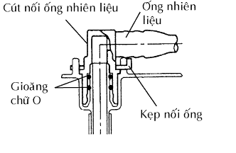
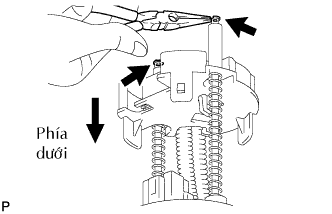
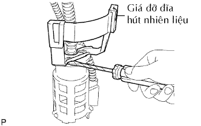

BƠM NHIÊN LIỆU > THÁO |
| 1. THÁO BÌNH NHIÊN LIỆU |
Tháo bình nhiên liệu ra khỏi xe (Xem trang Kích chuột vào đây).
| 2. THÁO CỤM ỐNG HÚT CÓ BƠM VÀ BỘ ĐO NHIÊN LIỆU RA KHỎI BÌNH XĂNG |
 |
Tháo 2 kẹp ống nhiên liệu và kéo 2 ống bơm nhiên liệu ra.
|  |
 |
Hãy ấn bơm nhiên liệu xuống và tháo 8 bu lông và đĩa bắt.
Tháo ống bộ đo nhiên liệu ra khỏi bình xăng.
Tháo gioăng ra khỏi bình xăng.
| 3. THÁO BỘ ĐO NHIÊN LIỆU |
Ngắt giắc nối bộ đo nhiên liệu.
Hãy ấn vấu bộ đo nhiên liệu A. Sau đó trượt bộ đo nhiên liệu lên trên.
| 4. THÁO BÌNH NHIÊN LIỆU PHỤ NO.1 |
 |
Ngắt giắc của bơm nhiên liệu.
 |
Dùng một tô vít, nhả khớp vấu trên đầu ống ra khỏi lỗ vấu. Tháo ống ra khỏi 2 kẹp.
 |
Tháo nắp bình xăng phụ.
Tháo 2 ống nhiên liệu và dây điện bơm nhiên liệu.
 |
Dùng một tô vít, nhả khớp 3 vấu ra khỏi các lỗ vấu và tháo nắp bình xăng phụ.
|  |
Dùng kìm mỏ nhọn, tháo 2 phanh hãm chữ E.
Tháo 2 lò xo.
 |
Dùng một tô vít, hãy ngắt 2 vấu ra khỏi các lỗ vấu và tháo bình xăng phu.
| 5. THÁO BƠM NHIÊN LIỆU |
Dùng một tô vít, nhả khớp 3 vấu ra khỏi các lỗ vấu và tháo bơm nhiên liệu và lọc hút.
 |
Tháo dây điện bơm nhiên liệu.
 |
Tháo gioăng chữ O ra khỏi bơm nhiên liệu.
| 6. THÁO TẤM ĐỠ HÚT NHIÊN LIỆU NO.1 |
|  |
Dùng một tô vít, nhả khớp 2 vấu ra khỏi các lỗ vấu và tháo tấm đỡ hút nhiên liệu.